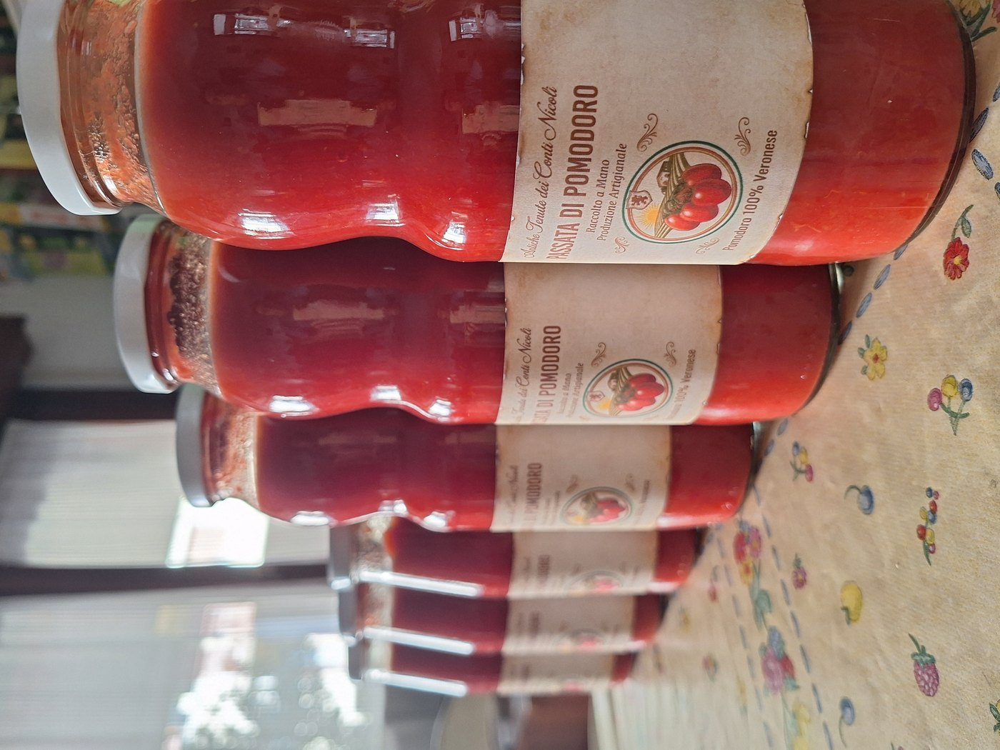
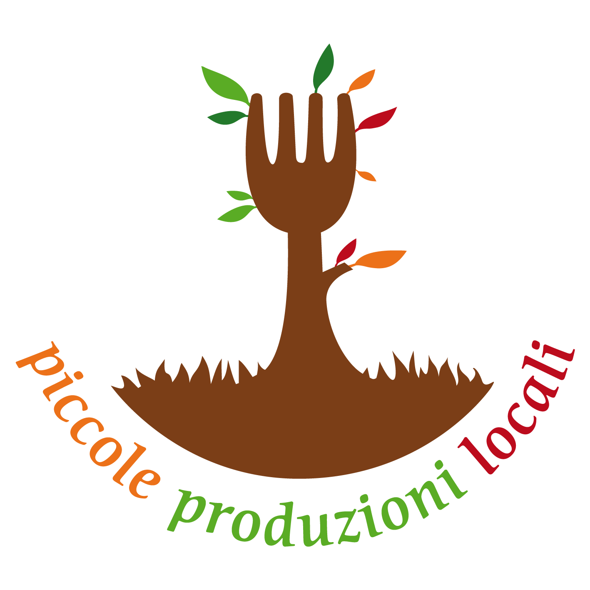
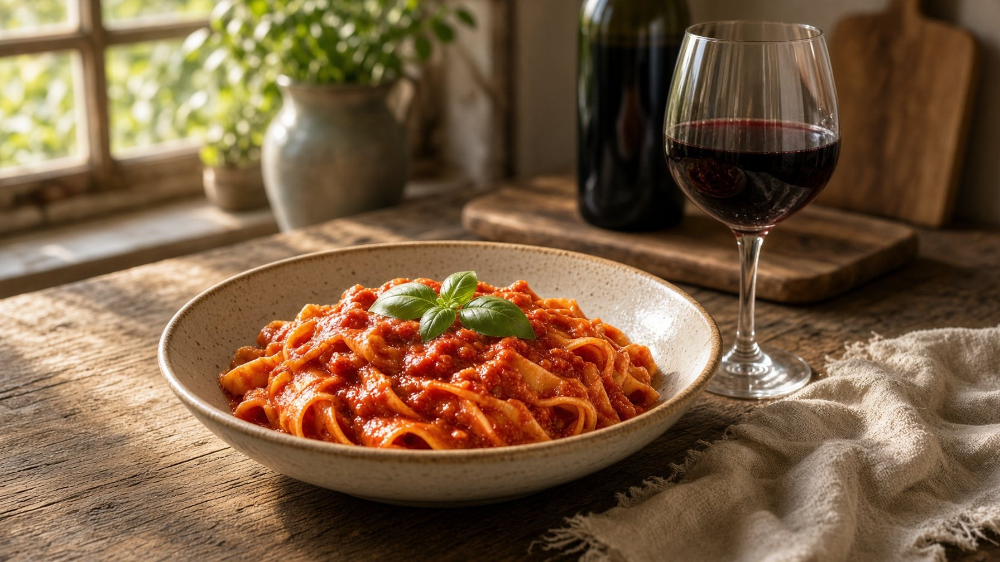

di Nicoli Federico
Antiche Tenute dei Conti Nicoli
Per Ardua Ad Honorem
Sposiamo appieno i valori della passata della tradizione veronese, tramandata di nonna in mamma. Utilizziamo esclusivamente pomodori di nostra produzione, coltivati con cura, maturati in piena aria al sole di agosto e lavorati rigorosamente a mano senza l'aggiunta di conservanti.


Passata naturale lavorata a mano
Ideale per un pranzo per una famiglia di 4 persone.
Passata naturale lavorata a mano
Perfetto per le grandi tavolate in famiglia o per una cena della domenica in compagnia.
Il nome della nostra azienda nasce dal ricordo del poeta della Sengia Sbusa, un prozio cantastorie che portava notizie, buonumore e speranza nelle case della Valpolicella durante i periodi più difficili e nei lunghi filò nelle stalle. Un cantastorie amato da tutti per la sua capacità di incantare l'anima.
Nel cuore di Negrar di Valpolicella sorge la Sengia Sbusa ("pietra bucata"), un monolite carsico alto 52 metri con un misterioso foro che guarda all'infinito. Qui si dice tradizionalmente che tutti i bambini siano nati dalla Sengia Sbusa, un simbolo naturale unico tra le marogne della nostra vallata veronese.

Si dice che un tempo fossimo nobili... o forse è solo una voce del passato! La verità è che oggi siamo "Conti" per davvero grazie all'unione tra me e mia moglie Elisa (Conti, per l'appunto!). Insieme alle nostre tre figlie custodiamo questo legame con la terra: perché per ritrovare l'onore non servono blasoni o carte antiche, ma basta un pomodoro maturo sotto il sole di agosto e una famiglia che cammina insieme.